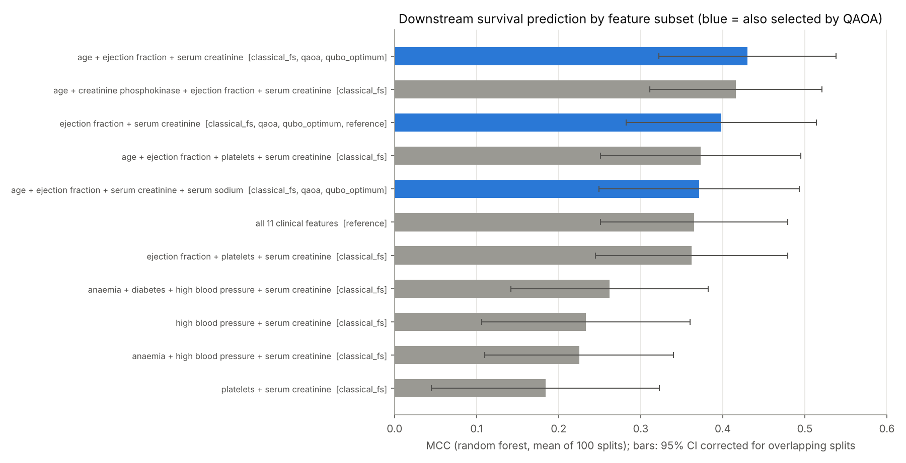

HeartPanel finds the cheapest set of routine tests that still predicts death in heart failure, for the equipment each clinic actually has. Then it ranks every patient for a clinician to review.
Research prototype · 299 real, de-identified patients · not a diagnostic tool
| Patient | Age | EF % | Risk | Band |
|---|
The strongest heart-failure marker, ejection fraction, needs an echocardiogram: a machine and a trained sonographer. Many clinics have neither, but they all have a blood test.
per patient (2026 Medicare fee schedule). Needs equipment and a specialist.
per patient (2026 Florida Medicaid lab fee). Gives creatinine and sodium from one blood draw.
Echo machine? Lab? HeartPanel uses your real test prices.
Choosing tests is a QUBO. QAOA finds the most informative, least redundant set that fits.
Each patient gets a risk and a band: high, medium or low.
Named reviewer, a decision and a note, all on record.
Every optimum needs serum creatinine. We recommend adding one $4.57 blood test rather than guessing.
With 299 patients, the gap between the echo and no-echo panels is not statistically significant (corrected p = 0.10), so a lab-only clinic still gets a usable tool.
Why quantum, honestly. At 11 measurements brute force can check every answer, and QAOA matched it in every run. That check is what lets us trust it on 50 to 500 candidate markers, where brute force is impossible. We do not claim quantum advantage at 11: simulated annealing solves it in 0.3 s.
Compared on identical data, splits and metrics against exhaustive search, simulated annealing, tabu search, random sampling and the classical methods practitioners use.

One hospital, 299 patients, retrospective. On this sample the best panel is statistically level with all 11 features. No real-hardware run yet. All stated up front.
Every number comes from committed code and results. One command regenerates every table and figure.
Public, de-identified data (CC BY 4.0). Review notes stay in the reviewer's browser. HeartPanel never changes a record.